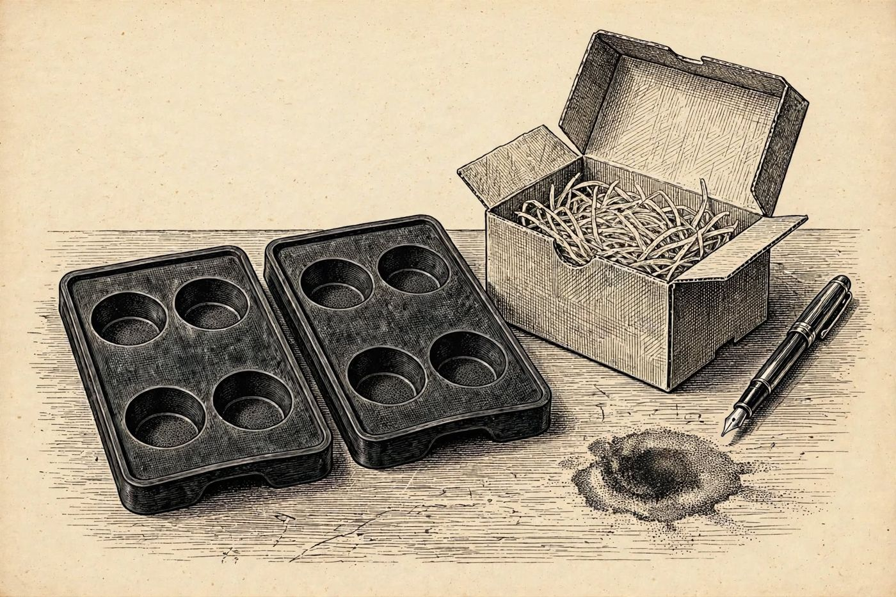

20 de diciembre
El molde que sobra
Libro · págs. 84-87
Audio del día
Transcripción
«Le juro que yo solo firmé el albarán del primer bulto que llegó a recepción… Pero mire la factura de Alpin Bar Supplies. Hay una mancha de café sobre una de las líneas, aunque el total no miente. Haga la resta. Cuente cuántos llegaron de verdad, cuántos se registraron y cuántos hay ahora en el hotel. Mila le espera abajo, en el almacén, junto a las cajas de adornos de Navidad. Dice que hay algo que no debería estar allí.»

Intenta resolverlo primero. Abre solo lo que necesites, en este orden.
1Pista sutil
Suma el importe de las líneas visibles de la factura (Copas 114 + Pinzas 18 + Amargo 58 = 190 Fr.). Resta este total de la cifra final de la factura (234 Fr.) para conocer el coste atribuible a los moldes.
2Comprobación parcial
La línea de moldes suma un total de 44,00 Fr. Dividido entre el precio unitario de 22,00 Fr., da exactamente 2 moldes comprados en esa factura.
3Pista fuerte
114 + 18 + 58 = 190. El total es 234, así que los moldes suman 44 francos. Cada molde cuesta 22, así que 44 ÷ 22 son los moldes facturados.
4Solución oficialSpoiler si no lo has intentado
Cálculo de inventario:
Total factura (234) − Líneas visibles (190) = 44 Fr.
Moldes comprados: 44 ÷ 22 = 2 moldes.
Moldes esperados según la factura: 1 + 2 = 3.
Moldes esperados según albarán e inventario: 1 + 1 = 2.
Moldes que hay en realidad: 2 (bar) + 1 (caja 7) = 3.
Moldes sin registrar: 3 − 2 = 1 molde.
Para el desenlace de la historia, vuelve al libro: la sección de soluciones está al final.